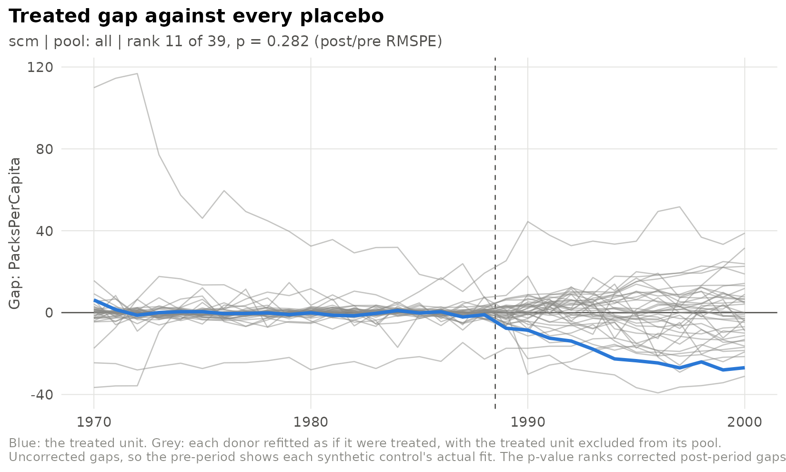

Synthetic control: bias correction, exact fits and permutation inference
Source:vignettes/synthetic-control.Rmd
synthetic-control.Rmd
library(sdidlab)
panel <- prop99_panel()synthdid’s sc_estimate() is a synthetic control matched
on pre-period outcomes. fit_scm() is the classic Abadie,
Diamond and Hainmueller (2010) estimator: it matches on a predictor
matrix with predictor weights V, and adds the Abadie-L’Hour
bias correction and penalty. Use it through fit_spec() with
estimator = "scm", or directly on a matrix.
The estimator
Donor weights w lie on the simplex and minimise the
V-weighted discrepancy between the treated unit’s
predictors and the weighted donors’. By default the predictors are the
pre-period outcomes, standardised, with equal weights.
v_method = "mspe" searches for the V that best
fits the pre-period outcome, as Synth does.
The weights are solved exactly by an active-set method. The test
suite checks them against the optimality conditions of the problem and
against Synth.
setup <- build_setup(sdid_spec(), panel)
fit <- fit_scm(setup$Y, setup$N0, setup$T0, bias_correct = FALSE)
round(sort(fit$omega[fit$omega > 0], decreasing = TRUE), 3)
#> Utah Montana Nevada Connecticut New Hampshire
#> 0.385 0.271 0.186 0.080 0.049
#> Colorado
#> 0.030
fit$att
#> [1] -19.74716Bias correction
Even a good synthetic control leaves some discrepancy in the predictors, and that discrepancy biases the estimate. The Abadie-L’Hour correction regresses the outcome on the predictors among the donors, one period at a time, and subtracts the model’s prediction of the leftover discrepancy:
fit_bc <- suppressMessages(fit_scm(setup$Y, setup$N0, setup$T0))
c(uncorrected = fit$att, corrected = fit_bc$att)
#> uncorrected corrected
#> -19.74716 -12.68546One consequence is easy to misread. In any period used as a predictor, the corrected gap is mechanically near zero, because that period’s regression fits it almost exactly. Flat pre-period gaps after correction confirm that the correction ran; they are not evidence of a perfect match. That is why sdidlab’s SCM figures show the uncorrected gap as the measure of fit.
Exact fits, and the penalty
When the treated unit’s predictors lie inside the donors’ convex
hull, the synthetic control can match them exactly.
Many different weightings then fit equally well, and they imply
different counterfactuals, so the estimate depends on which one the
solver happens to return. It is not identified by the data. sdidlab
flags this (exact_match) and warns. When the whole
pre-period is reproduced exactly (exact_fit), it also
leaves the RMSPE ratio undefined, rather than letting a near-zero
denominator rank the unit first in a permutation test.
Matching on only three pre-periods makes this easy to see:
exact <- fit_scm(setup$Y, setup$N0, setup$T0, outcome_periods = c(5, 12, 19),
bias_correct = FALSE)
#> Warning: The synthetic control matches the predictors exactly.
#> ℹ The weights are then generally not unique, and different optimal weights
#> imply different effects.
#> ℹ Treat the estimate as unidentified, or pass a small `penalty` to select the
#> unique penalised solution (Abadie and L'Hour 2021).
c(exact_match = exact$exact_match, exact_fit = exact$exact_fit)
#> exact_match exact_fit
#> TRUE FALSEThe Abadie and L’Hour (2021) penalty resolves it. Adding
penalty * sum_j w_j ||X_1 - X_j||^2 to the objective
charges for using donors that are individually far from the treated
unit. For any positive value the weights are unique. A small penalty
picks, among the exact fits, the one built from the nearest donors:
penalised <- fit_scm(setup$Y, setup$N0, setup$T0, outcome_periods = c(5, 12, 19),
bias_correct = FALSE, penalty = 1e-3)
c(unpenalised = exact$att, penalised = penalised$att)
#> unpenalised penalised
#> -23.8400 -23.0008Larger penalties trade pre-period fit for locality. As the penalty grows, the synthetic control becomes the single nearest donor.
Permutation inference
The Abadie-style test refits the synthetic control with each donor in
turn standing in as the treated unit, with the real treated unit removed
from its pool, and ranks the treated unit’s ratio of post-period to
pre-period RMSPE against the placebos’. Through fit_spec()
this happens automatically:
run <- suppressMessages(suppressWarnings(fit_spec(sdid_spec(estimator = "scm"), panel)))
c(att = run$fit$att, p = run$fit$rmspe_p, rank = run$fit$rmspe_rank, of = run$fit$placebos_total)
#> att p rank of
#> -12.6854587 0.2820513 11.0000000 39.0000000
plot_scm_gaps(run)
The smallest p-value attainable is one over the number of units: here 0.026. Read it as a rank, not as a continuous p-value.
rmspe_pvalue() also supports one-sided tests, which
regain some power with few donors when the direction of the effect is
known in advance.